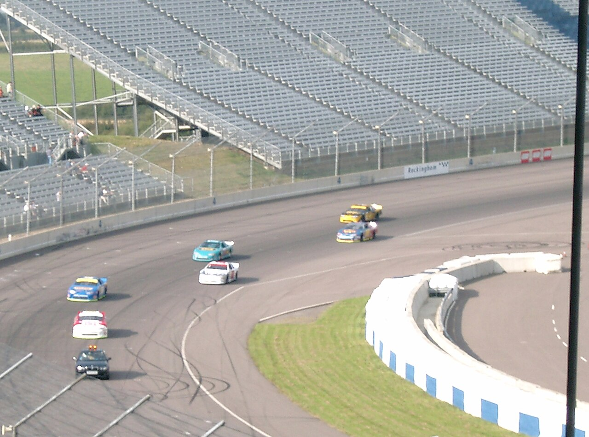

Give the first corner room
Hold a steady direction off the line. The pack is close and tyres may be cold, so leave extra space and expect to brake earlier than you do alone.
03 / ON THE TRACK
Good racecraft is being clear and predictable when other cars are around. You can race hard while leaving room, making deliberate moves, and giving yourself time to react.

Other drivers can react to a move they can read. Smooth, steady choices make close racing easier for everyone.
Hold a steady direction off the line. The pack is close and tyres may be cold, so leave extra space and expect to brake earlier than you do alone.
When defending, pick your position early and keep it. Avoid weaving or moving across another car’s path as they approach the braking zone.
If another car is alongside as you turn, leave enough track for both cars. A slightly slower, clean exit is better than contact.
Racecraft begins before the braking zone. Keep enough attention and space in reserve to react.
Scan through the corner and along the next straight, not just at the rear bumper ahead. Notice cars slowing, rejoining, or moving into a passing lane before they are right beside you.
Relative-position displays and spotters can help with blind spots, but they may be delayed or simplified by the game. Keep a steady line and verify there is room before moving across the track.
If you spin or leave the track, brake if needed and look both ways before returning. Rejoin parallel to the racing direction, away from the fast line when possible, and let approaching cars pass.
A pass usually starts before the braking zone. If the gap is closing, wait for a better chance instead of forcing it.
Follow at a steady distance and use the previous corners to build a run. Don’t bump the car ahead to create a gap.
Move to the passing side early enough to be seen. If you arrive alongside, both drivers should leave room into the turn.
Stay in control, give space until clear, then return to the racing line smoothly. Skip the move if there isn’t room to finish it.
Try a short race against easy AI or in a practice lobby. Focus on clean starts and predictable lines, then review one moment where you had to react. Pick one thing to improve next time.